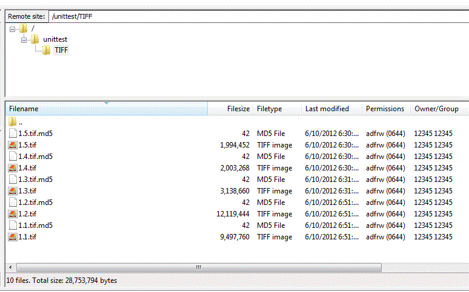

(Quick Reference)
Object-repository - Reference Documentation
Authors: Lucien van Wouw
Version: 1.2
1 Introduction
The object repository is part of a service oriented framework. That is, the latter offers a collection of services:
- ftp upload of files to a staging area (temporary storage)
- ingesting those files into persistent storage
- image, audio and video derivative generation
- accepts custom made derivatives of any content type
- persistent identifier creation by calling a PID webservice (binding file and compound object locations and their handles via a [PID webservice|]https://pid.socialhistoryservices.org/.)
- dissemination of the resources via HTTP and FTP
- exports compound objects by via METS and PDF
- an administration interface plus account system to manage the above services and access policies
1.1 Change Log
Current release - version 1.2
- the structure of compound objects can be expressed in the processing instruction: file order and a group identifier
- based on this structure; it is possible to export METS and PDF files on the fly via dissemination
- a PID can be set for the group identifier
- instructions can be recreated after an ingest
- pid lookup is possible at the "stored objects" panel
- read only FTP access to the master and derivatives for administrative accounts
Deprecated: CPADMIN accounts can no longer be set via the administration interface. Contact the administrator of to
distribute such privileged accounts.
Version 1.1
- Derivative production of audiovideo
- Custom policies can change the default 'closed' access for masters to open and restricted
- Deletion of masters and derivatives are removable via an instruction
- Content and usage statistics are available on the main dashboard
Version 1.0.1
The administration interface has links in the footer to:
- Build info showing the most recent changes
- For reporting bugs and feature request please visit Jira
Version 1.0
First release
1.2 Milestones
Detailed milestones (until June 2013)
| date | milestone | status |
|---|
| June 2012 | Maintain code on GitHub | released |
| July 2012 | Documentation of object repository design | released |
| July - November 2012 (August Vacation period) | Derivative production for video | released |
| July - November 2012 (August Vacation period) | Derivative production for audio | released |
| July 2012 | oauth2 administrative Interface | released |
| July 2012 | Captcha to administrative Interface | delayed |
| July 2012 | Add IPv6 compatibility to Infrastructure and software | released |
| July 2012 | Maintain and support helpdesk | released |
| July 2012 | Documenting the Object repository infrastructure | released |
| September 2012 | Content and usage statistics | released |
| November 2012 | Secure Key-based delivery of content ( e.g. for webshop and other external clients ) | released |
| September 2012 | ‘delete-files’ and/or ‘delete-collections’ | released |
| December 2012 | Documentation on how to setup the object repository | pending |
| January 2013 | Add METSmaker | moved to other project |
| February 2013 | METS to pdf converter | released |
| April 2013 | guest ftp accounts | pending |
1.3 Roadmap
Integrity assurance service
The object-repository needs a further integrity validation of stored master material. This involves random checksum
calculations on files.
Auto-reparations
When file degradation is detected reparations should be performed using the replicas; or master.
File identification and validation service
A service that invokes Fido and DROID for file identification to assist determining and verifying a given content type.
OCR, data mining and entity recognition
2 Architecture
/home/lwo/object-repository/object-repository-admin/src/docs/guide/architecture.gdoc
2.1 Workflow services
/home/lwo/object-repository/object-repository-admin/src/docs/guide/architecture/architectureWorkflowService.gdoc
2.1.1 Initiate
/home/lwo/object-repository/object-repository-admin/src/docs/guide/architecture/architectureWorkflowService/architectureWorkflowServiceInitiate.gdoc
2.1.2 Active
/home/lwo/object-repository/object-repository-admin/src/docs/guide/architecture/architectureWorkflowService/architectureWorkflowServiceActive.gdoc
2.1.3 End
/home/lwo/object-repository/object-repository-admin/src/docs/guide/architecture/architectureWorkflowService/architectureWorkflowServiceRetire.gdoc
2.2 Message queue producer
/home/lwo/object-repository/object-repository-admin/src/docs/guide/architecture/architectureMessageQueue.gdoc
2.2.1 Processing instruction consumer
/home/lwo/object-repository/object-repository-admin/src/docs/guide/architecture/architectureMessageQueueInstruction.gdoc
2.2.2 Ingest consumer
/home/lwo/object-repository/object-repository-admin/src/docs/guide/architecture/architectureMessageQueueIngest.gdoc
2.2.3 Derivative consumer
/home/lwo/object-repository/object-repository-admin/src/docs/guide/architecture/architectureMessageQueueDerivative.gdoc
2.2.4 PID consumer
3 Staging area
The staging area is a work space where you can assemble your ingest package. Here you:
- use ftp to upload files to temporary storage and rearrange these
- optionally upload a XML processing instruction
- optionally upload derivative material
3.1 FTP
To connect to the staging area you need one or more ftp accounts which a CP administrator can via with the
Accounts section.
at the administrator interface.
FileZilla and
WinSCP are known to work well
with the staging area. To make a connection:
- create an ftp-account
- set the host name of the staging area to the one mentioned in the ftp account confirmation e-mail
- set the ftp client to support an explicit FTP over TLS connection
- enable passive mode.
- The ftp port to use is the default 21.
As a rule (and avoid confusion) use the CP user account to upload files and XML processing instructions with. Not your
CP administrator account.
3.2 Datasets
After a CP user (of course, ftp procedures can be automated also) logs in with a ftp-account, the first directory visible
is the
home directory
. A FTP client will show this as a "/".
The user should at least upload one
main folder
containing files (your dataset) in the
home directory. This example illustrates the upload of a main folder called "unittest" and it contains 5 files.

Any folder or file that starts with a dot, will be ignored by the ingest procedures.
Also any digital file placed right in the home directory and not in a main folder will be ignored.
See there are 10 files ? For each file you upload to the staging area, the FTP server produces a md5 checksum. This is
stored next to the file in the format
filename.md5. The checksum it contains is compared the one you
deliver in a
processing instruction in order to assert integrity. It contains something like this:
181c838e29cbb0602da4a160eece2217 1.1.tif
You should not delete automatically created md5 files. If you do; the ingest of your files can take a long time.
3.3 Your own derivatives
The object-repository has a service to create lower level copies of the masters.
It attempts to create three levels for images and first page pdf documents:
- level 1: high print quality
- level 2: medium screen quality
- level 3: small, thumbnail quality
For audio:
- level 1: high quality mp3
For video:
- level 1: high quality h264 AAC (mp4) movie
- level 2: montage of 16 stills taken from the entire movie's range
- level 3: small, thumbnail quality taken from the middle of the movie
If you want you can add your own derivative material because it is of better quality or the type of derivative
manufacturing is not supported.
Conventional offerings
The position and names of the derivatives must follow conventions:
- the root folder in which the derivative is placed must be called ".level1" or ".level2" or ".level3". Notice they
start with a dot.
- the derivative filename must be identical ( case sensitive ) to that of the master filename - excluding the file
extension. For example
if the master is called
MyFile.tiff or
BigVideo.mpg then the custom derivative must be positioned and named like
/.level1/MyFile.jpg or
/.level2/BigVideo.mpg
- the derivative must be parallel to the master file.
- the extension of the derivative must be related to a known contenttype as indicated in this list. If you see that your derivative extension is not in this list, then make a feature request.
A few examples will clarify the points just made.
Example 1
A master is placed deep within some subfolders:
/main_folder/b/c/d/myLargeFile.tiff
And the derivative file is called
myLargeFile.pngThen a level1 derivative can be placed anywhere by
inserting a
.level1 folder thus:
/main_folder/b/c/d/.level1/myLargeFile.png/main_folder/b/c/.level1/myLargeFile.png/main_folder/b/.level1/d/myLargeFile.png/main_folder/.level1/c/d/myLargeFile.png
Or by
substituting a folder so:
/main_folder/b/c/.level1/myLargeFile.png/main_folder/b/.level1/d/myLargeFile.png/main_folder/.level1/c/d/myLargeFile.png
Example 2
A master is placed in the main folder
/mydataset/myVeryLargeMovie.mpg
Then we offer both level1, level2 and a level3 file like this:
/mydataset/.level1/myVeryLargeMovie.mpg/mydataset/.level2/myVeryLargeMovie.mpg/mydataset/.level3/myVeryLargeMovie.mpg
The derivative service will first look a custom derivative. If it does not find a one, it will attempt to produce it
Supplying derivatives some time after an ingest
To add custom derivatives after the ingest is completed, you follow the same procedure:
- upload your custom derivative files according to the location convention
- in case your instruction gives validation warnings on absent master locations: disable and save the plan's master and
any other non-related derivative tasks. Then validate the instruction
- Start processing your files.
Should you have deleted your instruction, then either recreate it from the Stored objects menu. Or
reupload a new one which should contain the location elements from which the custom derivative
can be found.
In case you reupload for the sake of ingesting custom derivatives, the location element
need not be the same as the original master files from a previous instruction.
4 Download files using ftp
Just like the stagingarea where you upload files using ftp;
you can download ingested files using ftp as well.
FileZilla and
WinSCP are
ftp clients you can use. Or any other for that matter, provided you use these settings:
- connect to ftp.objectrepository.org
- set the ftp client to support an implicit FTP over TLS connection
- enable passive mode.
- your account is the same account with which you administer your object repository.
The ftp home directory will represent files in the same way as the masters were ingested. There is a folder for
each of the stored master and it's derivatives there:
/master
/level1
/level2
/level3
The directory tree is similar to the way files are offered to the staging area at ingest time.
5 Prepare the ingest
The administration interface and an XML processing instruction together makes it all work.
An instruction has required and optional values. Those values can be set at three levels:
1. Profile
Via the administration interface select
profile. Default
instruction settings can be
placed there by a CP administrator. It makes sense therefore, to set all your broad access policies and most frequently
used file content values here. Settings in the profile substitute any absent values in the XML processing instruction.
2. instruction.xml
The instruction.xml is a XML document. It's main element is named
instruction and contains attributes identical to
those you set in the profile. Any setting here will override those in the profile. Typically you would set values that
are exceptions to the more global general situation.
Each main folder ought to contain an XML document. However with automated creation of instructions you need no XML.
3. Stagingfile
In the instruction.xml's child elements one should mention
stagingfile elements. A stagingfile element represents the
file and any settings here will override those in the main element and profile.
The stagingfile is the only element that has some unique settings not present in the profile or instruction, such as md5,
location and pid value.
In short
Profile settings provide reasonable defaults for an organizations processing instruction.
Instruction settings in an instruction.xml document override profile values and provide specific defaults for
stagingfiles.
Stagingfile settings in their final turn override instruction and profile settings. The smallest always win.
5.1 Instruction settings
You can manage the ingest of your files by setting the instruction's elements. As these configurations can be placed
at different levels ( profile's, XML instruction's and stagingfile's ) we mention that between brackets.
To begin with: a friendly description
label (profile and instruction element)
A human readable bit of information. This will show up on the administration
interface when viewing your instructions.
Plan the services
plan (profile and instruction)
Determines what services are to be used ( in no particular order ). Seperated by a comma.
To tell you want a master ingest or update:
plan='StagingfileIngestMaster'
To call the PID webservice:
plan='StagingFileBindPIDs'
This will invoke the PID webservice to bind the PIDs to the resolve url's of the object repository. One must have
an account at a PID webservice and have the
pidwebserviceEndpoint and
pidwebserviceKey set.
To produce derivatives:
- @plan='StagingfileIngestLevel1'
- @plan='StagingfileIngestLevel2'
- @plan='StagingfileIngestLevel3'
If left empty, the default is to use all the services. This is equivalent to adding the following in an XML instruction:
plan='StagingfileIngestMaster,StagingFileBindPIDs,StagingfileIngestLevel1,StagingfileIngestLevel2,StagingfileIngestLevel3'
Additions and updates
action (profile, instruction and stagingfile elements)
This controls how the ingest and dissemination procedures handles the file. The default 'upsert' is the most simple
to use as it covers most use cases.
action='upsert' ( default )
Adds the file with the given pid. If a file with the pid already exists, it will be updated with the new file.
Add a file with the given pid. But error will occur when the pid already exists in the object repository
Updates a file with the given pid. But error will occur if the pid does not exists in the object repository
Removes the file with the specified PID. In this version of the object-repository the delete action does not remove
a file. Rather it sets the access value to 'deleted' and makes the digital object unavailable this way.
Access policy
access (profile, instruction and stagingfile elements)
Determines which dissemination policy to use when anonymous users want to view a level1, level2 or level3 derivative.
There are three out-of-the-box policies available:
All derivatives are viewable to the world:
Level 1 is restricted; level 2 and 3 are viewable to the world
no files can be downloaded or viewed
access='closed' (default)
In the administration interface a CP administrator can add new policies and thus apply custom view levels.
The compound object identifier and ordering of files
objid (instruction, stagingfile; empty by default)
Groups all the files declared the instruction; stating they all belong to the same compound.
The syntax of this file is the same as any PID element.
seq (stagingfile; 1 by default)
Typically when using the objid; you would express the order for each stagingfile with the
seq element. If you
do not specify the order; the alphabetical ordering of your staged files will determine that sequence value.
pdfLevel ( profile, instruction; 'level2' by default )
Determines which derivative level shall be used to render a PDF with. This level must consist of images.
Mimetype
contentType (profile, instruction and stagingfile elements)
The value indicates the nature of the file ( like "image/jpeg", "application/pdf , etc)
Make sure your mimetype is correct or else the derivative creation or rendering may not go quite according to plan.
For more on mimetypes see:
Checksum
md5 (stagingfile element)
Used to determine if the transport from one place to another (the staging area; the document database) was in deed
without flaw.
File location
location (stagingfile element)
The case sensitive path and filename of the digital file. The beginning of the path is the same as the home directory.
The persistent identifier
pid (stagingfile element)
The object-repository needs the PID (e.g. a piece of string that can be resolved via Handle System, Ark, DOI) without the base URL, for example like:
<pid>12345/mypid</pid>
<pid>hdl:12345/mypid</pid>
<pid>ark:/12345/654xz321</pid>
<pid>10.12345/jmbi.1998.2354</pid>
<pid>doi:10.12345/jmbi.1998.2354</pid>
When unable to provide a pid value, use the optional substitute lid stagingfile element.
Set a PID resolver base url
resolverBaseUrl (profile and instruction element)
The resolver is a website that will know what to do with the PID. So if the PID is attached to the resolverBaseUrl we
ought to have a complete, workable url. This is used at the dissemination end of the object-repository to offer a link
for the enduser.
For example, for
<pid>12345/mypid</pid>
and
resolverBaseUrl='http://hdl.handle.net/'the complete link on the dissemination interface would become:
http://hdl.handle.net/12345/mypidThe optional 'lid' identifier
This element is a system (your local organization's system that is ) wide unique identifier. For example a LIS number or
database key. Usage of this substitute is only needed if you are unable to supply and manage your own PIDs. You ought to
have a PID webservice account to use the LID-PID substitute.
When you submit a LID; the PID webservice will generate a PID value and insert it into the instruction. Any update
afterwards with the same LID will return this PID.
The PID webservice
pidwebserviceEndpoint: the endpoint or url of a PID webservice
pidwebserviceKey: the webservice key that belongs to your account at the PID webservice
These two settings combined are required to bind the PIDs to the object-repository's resolve URLs.
Automated PID creation
autoGeneratePIDs (profile and instruction element)
Is trickered by the administration interface
autoCreate instruction and
upload instruction commands.
autoGeneratePIDs='none' (default)
Wont do anything for an absent pid element
The system will provide an empty PID element with a seemingly random string.
Example:
<pid>12345/10997FB2-1BFD-4191-A7E2-1AA1308960BB</pid> autoGeneratePIDs='filename2pid'
Substitute an empty PID element with the filename ( without suffix ).
example:
MyLargeFile.tif will lead to
<pid>12345/MyLargeFile</pid> autoGeneratePIDs='filename2lid'
Substitute an empty lid element with the filename ( without suffix ).
example:
MyLargeFile.tif will lead to
<lid>12345/MyLargeFile</lid>
Ignore an empty PID setting during auto creation and validation as long as it has a LID element
Automatic ingest ( for automated batch procedures )
autoIngestValidInstruction (profile and instruction element)
If set to
autoIngestValidInstruction='true'
will start an instruction process. But only if the instruction that was
uploaded or automatically generated is valid.
Typically this is useful for batch procedures that involve automated FTP uploads of files and processing instructions.
Replacing derivatives
replaceExistingDerivatives (profile, instruction and stagingfile element)
Used in combination with a plan that creates derivatives.
When set to false ( default ) your derivatives will be replaced by newly master converted ones.
Custom derivatives will always be ingested, regardless of this setting.
E-mail notifications
notificationEMail
This value is a comma delimited list of e-mail addresses. When an instruction is completed, it will sent a message
to those e-mails
5.2 The XML instruction
A XML processing instruction should be:
- named
instruction.xml
- placed in the main folder of the uploaded dataset.
For example if you uploaded these five files onto the staging area in the main folder
unittest then you must add the
instruction in the folder
unittest as well:

This file will be deleted automatically after you uploaded it, as it is read into a database. You can re upload the
instruction any time you want. Or download it from the database back to your local PC or the staging area main folder
using the administration panel.
The schema can be found hereWhen you download a XML processing instruction, it may have added validation messages.
Working example of an XML instruction
Lets say we automatically create an instruction via the administration panel for the five files we just uploaded.
On the
instructions page we edit the settings and indicate the following:
| element | value |
|---|
| Label | My five files |
| Action | upsert |
| Access | open |
| ContenttypeMimetype | image/tiff |
| Auto generate PIDs | filename2pid |
| Auto ingest valid instructions : off |
| Resolver baseUrl | http://hdl.handle.net/ |
| Service to execute | all |
After we press "update" we can download the XML for viewing:
<?xml version="1.0" encoding="utf-8"?>
<!--Instruction extracted on 11 Jun 2012 11:05:15 GMT-->
<instruction xmlns="http://objectrepository.org/instruction/1.0/"
access="open"
action="upsert"
autoGeneratePIDs="filename2pid"
contentType="image/tiff"
label="My five files"
resolverBaseUrl="http://hdl.handle.net/">
<stagingfile>
<pid>12345/1.1</pid>
<location>/unittest/TIFF/1.1.tif</location>
<md5>181c838e29cbb0602da4a160eece2217</md5>
</stagingfile>
<stagingfile>
<pid>12345/1.3</pid>
<location>/unittest/TIFF/1.3.tif</location>
<md5>efac78a3f9bc224b581bd9e6003813e3</md5>
</stagingfile>
<stagingfile>
<pid>12345/1.4</pid>
<location>/unittest/TIFF/1.4.tif</location>
<md5>b2d09024f5c5c9b823ec614a7d7bc8d0</md5>
</stagingfile>
<stagingfile>
<pid>12345/1.5</pid>
<location>/unittest/TIFF/1.5.tif</location>
<md5>4daae1f298383d440f725f195621cebf</md5>
</stagingfile>
<stagingfile>
<pid>12345/1.2</pid>
<location>/unittest/TIFF/1.2.tif</location>
<md5>5eaea136b6e49f2dabff2f8f1a278d7c</md5>
</stagingfile>
</instruction>Validation
An automatic validation procedure will run the moment you
autocreate an instruction or ftp one into the main folder.
The results of the validation will show up in the CP administration interface per instruction and per file. In addition,
downloading the file via the CP administration interface will give you the XML instruction with
error elements if any.
After you correct the issue, you can reupload the XML processing instruction and files where needed.
The validation will look for a number of issues:
- all files in the main folder must be in the instruction
- all stagingfile elements in the instruction must be found the main folder content
- the md5 checksum values must match
- a PID ( or lid substitute ) must be present
- the PID or LID values may not occur elsewhere in the instruction
- a file cannot be zero bytes in length
Viewing and changing the XML instruction after upload
All the uploaded datasets's main folders are visible at the
instructions page of the administration
interface. There the instructions and stagingfile elements can be tweaked. This feature is locked after ingest.
Question: Should I automatically create an XML processing instruction?
It can be useful when you make your own custom instructions. You can use this feature to experiment to see how a
valid instruction looks like.
Should your PID or LID values be identical to the filenames, you could produce an instruction that is perfect for
ingest.
Two more examples of an XML processing instruction
Example with pid elements.
Lets us assume a folder structure of one main folder with five files
home-directory: /
/folderA
/folderA/Apple.tiff
/folderA/Pear.tiff
/folderA/Banana.tiff
/folderA/Potato.png
/folderA/SecretRecipe.tiffAnd to stretch the borders of our imagination a little further, suppose the CP administrator has set the following
default settings in the profile via the administration interface:
action=upsert
access=closed
contentType=image/tiffNow we can mostly fall back on the defaults the profile provides, but we do want to add some exceptions to the
profile rules by adding new values the XML processing instruction:
- Notice the
contentType for the potato ? It is not a tiff but an image/png.
2. And we feel the
access of the policy is too strict. Lets set it all to
open.
3. And lets set the
access to SecretRecipe.tiff to
restricted.
The processing instruction would then could look like this:
<?xml version="1.0" encoding="UTF-8" standalone="yes"?>
<instruction xmlns="http://objectrepository.org/instruction/1.0/" access="open"> <!-- access added here -->
<stagingfile>
<pid>12345/a</pid>
<location>/folderA/Apple.tiff</location>
<md5>cf3ee1101d19328145e94da1cade45bd</md5>
</stagingfile>
<stagingfile>
<pid>12345/b</pid>
<location>/folderA/Pear.tiff</location>
<md5>f57eb0e65d11a5a73eab9d5dddf1e528</md5>
</stagingfile>
<stagingfile>
<pid>12345/c</pid>
<location>/folderA/Banana.tiff</location>
<md5>c741cd201fafb15c5ec874ae16738671</md5>
</stagingfile>
<stagingfile>
<contentType>image/png</contentType> <!-- contentType here -->
<pid>12345/d</pid>
<location>/folderA/Potato.png</location>
<md5>c741cd201fafb15c5ec874ae16738671</md5>
</stagingfile>
<stagingfile>
<access>restricted</access> <!-- access element here -->
<pid>12345/e</pid>
<location>/folderA/SecretRecipe.tiff</location>
<md5>c741cd201fafb15c5ec874ae16738671</md5>
</stagingfile>
</instruction>Example with lid elements
As a second example, lets suggest you are a content provider that can not supply persistent identifiers but only supply
local identifiers. Lets also assume that you made things easy and the local identifiers can be derived from the filenames
but without the extension. Here we can automatically create an instruction.
this example would only work in the object repository when it can fall back on a Handle System compatible PID
webservice for which a naming authority is required. In the example we assume this so and the authority is 12345.
Lets say these are the files in the staging area:
home-directory: /
/folderA
/folderA/Apple.tiff
/folderA/Pear.tiff
/folderA/Banana.tiff
/folderA/Potato.tiff
/folderA/FreeRecipe.tiffAnd we have set our profile defaults via the administration interface thus:
action=upsert
access=closed
contentType=image/tiff
autoGeneratePIDs='filename2lid'Via the administration interface "instruction" tab, you can now press the autocreate button.
Alternatively, you could have created the XML instruction yourself so:
<?xml version="1.0" encoding="UTF-8" standalone="yes"?>
<instruction xmlns="http://objectrepository.org/instruction/1.0/">
<stagingfile>
<lid>12345/Apple</lid>
<location>/folderA/Apple.tiff</location>
<md5>cf3ee1101d19328145e94da1cade45bd</md5>
</stagingfile>
<stagingfile>
<lid>12345/Pear</lid>
<location>/folderA/Pear.tiff</location>
<md5>f57eb0e65d11a5a73eab9d5dddf1e528</md5>
</stagingfile>
<stagingfile>
<lid>12345/Banana</lid>
<location>/folderA/Banana.tiff</location>
<md5>c741cd201fafb15c5ec874ae16738671</md5>
</stagingfile>
<stagingfile>
<lid>12345/Potato</lid>
<location>/folderA/Potato.tiff</location>
<md5>c741cd201fafb15c5ec874ae16738671</md5>
</stagingfile>
<stagingfile>
<lid>12345/FreeRecipe</lid>
<location>/folderA/FreeRecipe.tiff</location>
<md5>d241cd201fafb15c5ec874ae167386ee</md5>
</stagingfile>
</instruction>5.3 Starting\run an instruction
Starting an instruction can be automated, provided the conditions are right:
- a FTP client has uploaded files
- a valid XML processing instruction is in a main folder
- If you had set the element ( in either the XML document itself or if not, at the profile panel ) :
autoIngestValidInstruction=true
In those cased the ingest of your files will start by itself.
This is the same for instructions that were automatically created using this setting.
If you disable
autoIngestValidInstruction, then a start needs a manual command. From the administration interface
select
Process instruction to start.
{Note}The manual option to Process an instruction will not appear until the instruction is considered valid.{Note}
6 PIDs and the repository's resolve urls
Persistent identifiers can be created and bound via an object-repository service that calls the PID webservice.
In other cases you can operate your own PID and resolver technology and point to resources that are exposed by the
repository.
The object repository will bind PIDs for:
6.1 Resolve URLs
For each master and derivative there is a resolve url. The PID of the file is part of that url. The convention here
is that the resolve URL =
http;//domain-of-the-repository/file/level]/pidFor example, if this was your PID:
12345/1.1And you created a level1, level2 and level3 derivative, then there are five resolve URLs in total to link to:
| view | Resolve Url |
|---|
| metadata | http://disseminate.objectrepository.org/metadata/12345/1.1 |
| master | http://disseminate.objectrepository.org/file/master/12345/1.1 |
| level 1 | http://disseminate.objectrepository.org/file/level1/12345/1.1 |
| level 2 | http://disseminate.objectrepository.org/file/level2/12345/1.1 |
| level 3 | http://disseminate.objectrepository.org/file/level3/12345/1.1 |
If you create and bind your own PIDs, you know in advance ( before you ingest ) what the resolve URLs are.
6.2 PIDs created via the PID webservice
files
When the StagingfileBindPIDs option was used, a call to the PID webservice will be made to bind the object-repository's
resolve URLs to this PID.
It will do so by convention:
http://hdl.handle.net/pid?locatt=view:level or masterThis means there will be several persistent URLs. For example, if this was your PID:
12345/1.1 then the persistent
URLs will be:
| view | persistent URL | Resolve Url |
|---|
| metadata | http://hdl.handle.net/12345/1.1 | http://disseminate.objectrepository.org/metadata/12345/1.1 |
| master | http://hdl.handle.net/12345/1.1?locatt=view:master | http://disseminate.objectrepository.org/file/master/12345/1.1 |
| level 1 derivative | http://hdl.handle.net/12345/1.1?locatt=view:level1 | http://disseminate.objectrepository.org/file/level1/12345/1.1 |
| level 2 derivative | http://hdl.handle.net/12345/1.1?locatt=view:level2 | http://disseminate.objectrepository.org/file/level2/12345/1.1 |
| level 3 derivative | http://hdl.handle.net/12345/1.1?locatt=view:level3 | http://disseminate.objectrepository.org/file/level2/12345/1.1 |
compound object identifiers
When you use an objid the resolve URLs will be different and resolve to the METS document and PDF files. As an
extra feature it will point to the derivative of the first file the compound object consists of:
| view | persistent URL | Resolve Url |
|---|
| mets | http://hdl.handle.net/12345/my-object-id | http://disseminate.objectrepository.org/mets/12345/my-object-id |
| master | http://hdl.handle.net/12345/my-object-id?locatt=view:master | http://disseminate.objectrepository.org/mets/12345/my-object-id |
| pdf | http://hdl.handle.net/12345/my-object-id?locatt=view:pdf | http://disseminate.objectrepository.org/pdf/12345/my-object-id |
| level 1 derivative | http://hdl.handle.net/12345/my-object-id?locatt=view:level1 | http://disseminate.objectrepository.org/file/level1/12345/1.1 |
| level 2 derivative | http://hdl.handle.net/12345/my-object-id?locatt=view:level2 | http://disseminate.objectrepository.org/file/level2/12345/1.1 |
| level 3 derivative | http://hdl.handle.net/12345/my-object-id?locatt=view:level3 | http://disseminate.objectrepository.org/file/level2/12345/1.1 |
The PDF made here is pointing to:
http://disseminate.objectrepository.org/pdf/12345/my-object-id/
pdfLevel
where
pidLevel refers to the derivative level of the images that will become the pdf.
7 Compound objects
Compound objects are abstractions of ordered files. The way you express a compound object is through the processing instruction.
Here you determine:
- the pid value to refer to a group of files
- the physical file order ;
This information is used to offer the download of:
at the dissemination api or website.
7.1 Object identifiers and file order
Expressing objid and order of files
The compound object has a persistent identifier. In the instruction this is set with the element
objid
This is a PID just like the PIDs you supply to identify your files with.
In addition each individual file in the instruction may be given an order using the element
seq.
As an example, take the situation where you offer a three page letter. You place it onto the staging area:
home-directory: /
/folderA
/folderA/page_0001.tiff
/folderA/page_0002.tiff
/folderA/page_0003.tiffObject ID and order is expressed this way in an instruction:
<?xml version="1.0" encoding="UTF-8" standalone="yes"?>
<instruction xmlns="http://objectrepository.org/instruction/1.0/" objid="12345/my-object-id">
<stagingfile>
<pid>12345/my-identifier-a</pid>
<seq>1</seq>
<location>/folderA/page_00001.tiff</location>
<md5>cf3ee1101d19328145e94da1cade45bd</md5>
</stagingfile>
<stagingfile>
<pid>12345/my-identifier-b</pid>
<seq>2</seq>
<location>/folderA/page_00002.tiff</location>
<md5>f57eb0e65d11a5a73eab9d5dddf1e528</md5>
</stagingfile>
<stagingfile>
<pid>12345/another-identifier-c</pid>
<seq>3</seq>
<location>/folderA/page_00003.tiff</location>
<md5>c741cd201fafb15c5ec874ae16738671</md5>
</stagingfile>
</instruction>If you autocreate an instruction, the seq element is always set in the alphabetical order of the files. An objid
can be set after the autocreate procedure is completed.
The PID of the objid and it's resolve URLs
When you offer an objid together with at least one file that has a sequence value of 1, a PID will be declared at
the PID webservice. This pid will refer to:
- a METS document
- a PDF
- and to the derivative levels of the very first file.
See the
chapter on the pids what the resolve URLs will become.
7.2 Mets
The object repository can disseminate the the compound object in a standardized way by exporting a profile level 3 METS document.
Mets is a
metadata standard of the Library of Congres.
The dissemination URL of a mets document is:
http://disseminate.objectrepository.org/mets/12345/my-object-id
The XML it produces would be similar to:
<?xml version="1.0" encoding="UTF-8"?>
<mets xmlns="http://www.loc.gov/METS/" OBJID="10622/ARCH00483.511">
<fileSec>
<fileGrp ID="master" USE="archive image">
<file CHECKSUM="7ce13c6f87930f456a315ae2b8f4f599" CHECKSUMTYPE="MD5" CREATED="2013-03-24T20:09:14Z" ID="f1"
MIMETYPE="image/tiff" SIZE="112909902">
<FLocat LOCTYPE="HANDLE" xmlns:xlink="http://www.w3.org/1999/xlink"
xlink:href="http://hdl.handle.net/12345/my-identifier-a?locatt=view:master"
xlink:title="page_00001.tif" xlink:type="simple"/>
</file>
<file CHECKSUM="db4baeeaa72f9d70248dc86243ec67a6" CHECKSUMTYPE="MD5" CREATED="2013-03-24T16:10:37Z" ID="f2"
MIMETYPE="image/tiff" SIZE="34832744">
<FLocat LOCTYPE="HANDLE" xmlns:xlink="http://www.w3.org/1999/xlink"
xlink:href="http://hdl.handle.net/12345/my-identifier-b?locatt=view:master"
xlink:title="page_00002.tif" xlink:type="simple"/>
</file>
<file CHECKSUM="b94a379b69a22a06733c099fae756d5b" CHECKSUMTYPE="MD5" CREATED="2013-03-24T27:10:25Z" ID="f3"
MIMETYPE="image/tiff" SIZE="34609288">
<FLocat LOCTYPE="HANDLE" xmlns:xlink="http://www.w3.org/1999/xlink"
xlink:href="http://hdl.handle.net/12345/another-identifier-c?locatt=view:master"
xlink:title="page_00003.tif" xlink:type="simple"/>
</file>
</fileGrp>
<fileGrp ID="level1" USE="hires reference image">
<file CHECKSUM="372fc2b527e841c87ae1981203853ecb" CHECKSUMTYPE="MD5" CREATED="2013-03-27T12:01:34Z" ID="f40"
MIMETYPE="image/jpeg" SIZE="281588">
<FLocat LOCTYPE="HANDLE" xmlns:xlink="http://www.w3.org/1999/xlink"
xlink:href="http://hdl.handle.net/12345/my-identifier-a?locatt=view:level1"
xlink:title="page_00001.jpeg" xlink:type="simple"/>
</file>
<file CHECKSUM="5b6375afa835b2737ddc785de94c78df" CHECKSUMTYPE="MD5" CREATED="2013-03-27T12:01:35Z" ID="f41"
MIMETYPE="image/jpeg" SIZE="524663">
<FLocat LOCTYPE="HANDLE" xmlns:xlink="http://www.w3.org/1999/xlink"
xlink:href="http://hdl.handle.net/12345/my-identifier-b?locatt=view:level1"
xlink:title="page_00002.jpeg" xlink:type="simple"/>
</file>
<file CHECKSUM="a575e7376590a77451fa2c5d0cc6b388" CHECKSUMTYPE="MD5" CREATED="2013-03-27T12:01:36Z" ID="f42"
MIMETYPE="image/jpeg" SIZE="544376">
<FLocat LOCTYPE="HANDLE" xmlns:xlink="http://www.w3.org/1999/xlink"
xlink:href="http://hdl.handle.net/12345/another-identifier-c?locatt=view:level1"
xlink:title="page_00003.jpeg" xlink:type="simple"/>
</file>
</fileGrp>
<fileGrp ID="level2" USE="reference image">
<file CHECKSUM="1131b5eaabd7eb8266295dfa6e9deb15" CHECKSUMTYPE="MD5" CREATED="2013-03-27T49:03:54Z" ID="f79"
MIMETYPE="image/jpeg" SIZE="40477">
<FLocat LOCTYPE="HANDLE" xmlns:xlink="http://www.w3.org/1999/xlink"
xlink:href="http://hdl.handle.net/12345/my-identifier-a?locatt=view:level2"
xlink:title="page_00001.jpeg" xlink:type="simple"/>
</file>
<file CHECKSUM="29b93e7a719c6235f63822cbd31cf310" CHECKSUMTYPE="MD5" CREATED="2013-03-27T49:03:56Z" ID="f80"
MIMETYPE="image/jpeg" SIZE="74001">
<FLocat LOCTYPE="HANDLE" xmlns:xlink="http://www.w3.org/1999/xlink"
xlink:href="http://hdl.handle.net/12345/my-identifier-b?locatt=view:level2"
xlink:title="page_00002.jpeg" xlink:type="simple"/>
</file>
<file CHECKSUM="e237e2a6cbac9e12b92b870e7845f211" CHECKSUMTYPE="MD5" CREATED="2013-03-27T49:03:57Z" ID="f81"
MIMETYPE="image/jpeg" SIZE="82348">
<FLocat LOCTYPE="HANDLE" xmlns:xlink="http://www.w3.org/1999/xlink"
xlink:href="http://hdl.handle.net/12345/another-identifier-c?locatt=view:level2"
xlink:title="page_00003.jpeg" xlink:type="simple"/>
</file>
</fileGrp>
<fileGrp ID="level3" USE="thumbnail image">
<file CHECKSUM="51935fb67bbb50b2d2908401ba95119e" CHECKSUMTYPE="MD5" CREATED="2013-03-27T49:03:57Z"
ID="f118" MIMETYPE="image/jpeg" SIZE="2644">
<FLocat LOCTYPE="HANDLE" xmlns:xlink="http://www.w3.org/1999/xlink"
xlink:href="http://hdl.handle.net/12345/my-identifier-a?locatt=view:level3"
xlink:title="page_00001.jpeg" xlink:type="simple"/>
</file>
<file CHECKSUM="0f012b9052011cfa9791783895931505" CHECKSUMTYPE="MD5" CREATED="2013-03-27T49:03:58Z"
ID="f119" MIMETYPE="image/jpeg" SIZE="3864">
<FLocat LOCTYPE="HANDLE" xmlns:xlink="http://www.w3.org/1999/xlink"
xlink:href="http://hdl.handle.net/12345/my-identifier-b?locatt=view:level3"
xlink:title="page_00002.jpeg" xlink:type="simple"/>
</file>
<file CHECKSUM="844a307af425882c241d8f8256fc1698" CHECKSUMTYPE="MD5" CREATED="2013-03-27T50:03:00Z"
ID="f120" MIMETYPE="image/jpeg" SIZE="4676">
<FLocat LOCTYPE="HANDLE" xmlns:xlink="http://www.w3.org/1999/xlink"
xlink:href="http://hdl.handle.net/12345/another-identifier-c?locatt=view:level3"
xlink:title="page_00003.jpeg" xlink:type="simple"/>
</file>
</fileGrp>
</fileSec>
<structMap TYPE="physical">
<div>
<div ID="g0" LABEL="Page 1" ORDER="1" TYPE="page">
<fptr FILEID="f1"/>
<fptr FILEID="f40"/>
<fptr FILEID="f79"/>
<fptr FILEID="f118"/>
</div>
<div ID="g1" LABEL="Page 2" ORDER="2" TYPE="page">
<fptr FILEID="f2"/>
<fptr FILEID="f41"/>
<fptr FILEID="f80"/>
<fptr FILEID="f119"/>
</div>
<div ID="g2" LABEL="Page 3" ORDER="3" TYPE="page">
<fptr FILEID="f3"/>
<fptr FILEID="f42"/>
<fptr FILEID="f81"/>
<fptr FILEID="f120"/>
</div>
</div>
</structMap>
</mets>7.3 Pdf
Another way compound objects are expressed is via PDF.
This is possible when at least one of the derivative layers is made from images.
The dissemination URL of a pdf document is:
http://disseminate.objectrepository.org/pdf/12345/my-object-id
which defaults to the rendering of a pdf with a level 2 derivative
You can specify the level yourself by adding it to the url so:
http://disseminate.objectrepository.org/pdf/12345/my-object-id/derivative level
If the level has a restrictive access, the pdf will not render
The PID of the compound object will resolve to the the
pdfLevel element set in instruction. See
pids.
8 Administration interface
The administration interface is where a CP administrator can:
- create ftp accounts.
- set a profile. That is, defaults for the processing instruction such as access, mimetype, the prefered services to use
- define access policies
- oversee the production of instructions, starting procedures and monitor the status
- download technical metadata of stored material
Access to the administration interface is possible via a privileged account only. Such accounts cannot be set
via the administration interface directly. Contact the administrator directly to set such accounts.
8.1 Ftp accounts
The account section will allow you manage ftp accounts for uploading and managing files on the staging area.
An additional function of such accounts is to to supply webservice keys.
This key gives access to all admin and stored repository resources.
Create a user
You need to fill in or edit the following fields:
Login name: A user name containing letters and numbersPassword: If the password is left blank, a random password will be createdE-mail: The end-user's mail address.Enabled: If on, the account can be used to login.
Press save to store. An account confirmation message is sent to the e-mail. It contains all user and ftp details
to login.
User display
This view will also show the webservice key. The key is intended to access an object repository resource that is
normally closed for anonymous users. The key needs to be attached to the resolve URL that points to a resource.
Or be in the header file of a client that is responsible for downloading the files.
The webservice key has the same effect when a user uses a username and password to access the administration interface.
To modify the webservice key select "Change key"
editing and removing
Any account can be modified and deleted. If you delete an ftp account; the user's uploaded files and home
directory still remain on the staging area. You need to move or delete these yourself with your administration account.
8.2 Profile
The profile is where you set the default values that are taken over by any processing instruction. That is: Settings in
the profile substitute any absent values in the XML processing instruction. It makes sense therefore, to place all your
broad access policies and most frequently used file content values.
The available options are described at the
settings section.
8.3 Access policies
A policy determines what an
anonymous user can and cannot do. Lets say that is a person with a webbrowser who is not
logged on to the object repository. Access to each master file and its related derivatives are thus governed by a
policy.
There are three main policies available:
| policy | access |
|---|
| closed | no files can be downloaded or viewed |
| restricted | level 1 derivatives are restricted ; level 2 and 3 are viewable to the world |
| open | All derivatives are viewable to the world |
The meaning of
restricted means the anonymous user can only see the file with a webservice key. Even though
at this moment this is not the case, this setting can be used to offer for example a "give me persmission to see this
file" option. This will never be the case when the file is closed.
Custom policies
You cannot modify these default policies, but to add your own custom policy is easily done by selecting "New Policy".
For each master and derivative you can determine it's access level.
8.4 Managing and monitoring instructions
Each main folder in the staging area you see is represented here.
The moment when a XML instruction is offered; or when it is autocreated, the number of declared files will show up.
In addition each file will have a validation status. The files can be viewed by selecting the link of the main folder.
Commands
Autocreate
This will autocreate an instruction. Press it and depending on the number of files, the instruction will be put into
the database.
Recreate
This option is available at the "Stored objects panel". It will reconstruct an earlier used instruction.
This command will not work, if there are still files staged with an existing instruction.
Download
One you created or uploaded an instruction, it can be downloaded as an XML instruction document.
Unfortunately, the download onto to the staging area of an instruction is not possible because of server
permissions. Choose the "download instructions via the browser" option in stead.
Upload
You can upload a XML instruction here so it will be placed on the staging area. FTP is also a way of uploading an
instruction.
Validate
Will perform a check on the instruction vis-a-vis the files in the staging area.
Process files
Kick starts the instruction
If you monitor the progress of for example an upload, creation or validation of an instruction it will eventually
finish. However no ingest instruction option seems to appear. To make it appear, press the browser's refresh button.
Monitoring
Each phase or step in the creation and running of an instruction can be monitored. The same for each individual files.
During an ingest, you can see the accumulative result of all files by selecting the link of the main folder.
Instruction status
This is the particular status of an instruction.

Files status accumulative
All progress for the files

Per file view

Success and retries
When all services of a file have completed, the file reference will be removed from the staging area. In the end all
the declared files will be gone.
Of course, things can go wrong. In that case the error is mentioned and nothing will happen until the issue is resolved.
If you feel this is because of a bug or system application failure, please contact the service desk that operates the
object repository.
You can rerun instructions with different options. For example, because you want to change a label, access status,
produce derivatives, etc.
8.5 Stored files
The files section will show all persisted files. Using the dropdown list, you can filter by instruction label.
Each file can be edited to change the policy and labeling.

In addition, download all technical metadata as XML per file of for all the files. The XML does not follow a schema
and is subject to change.
Recreate instruction
If you select a label from from the dropdown list; then you can use that selection to recreate an instruction.
Find by pid
Use the PID of a file to display it in the list. Or use the objid of the compound object to find all grouped files.